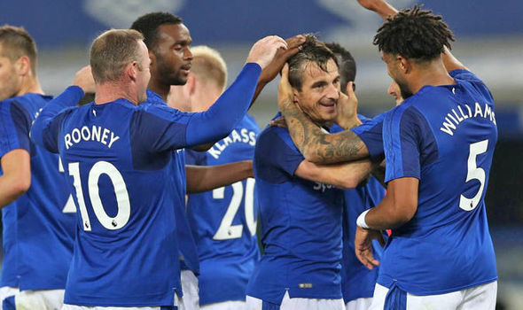
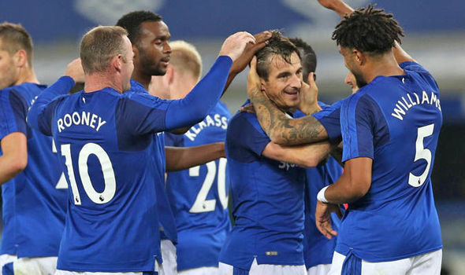
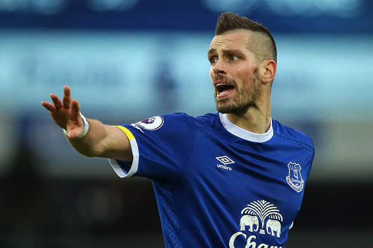

Everton Season Review 2017/18
With the Premier League starting this weekend, we assess Everton's strengths and weaknesses and consider their expectations for the upcoming season.

With the Premier League starting this weekend, we assess Everton's strengths and weaknesses and consider their expectations for the upcoming season.
Ronald Koeman’s first season with Everton was a successful one. He picked up the pieces from Roberto Martinez’s disastrous last two seasons, which saw the club languish in mid-table mediocrity. Koeman took the reins and guided Everton to a seventh-place finish, several points ahead of eighth and at times challenging the clubs above them. The cup runs were poor however, with third round losses to Norwich and Leicester in the EFL and FA Cups respectively. Ronald Koeman shored up a very leaky defence inherited from Martinez, with Koeman’s Everton conceding 11 goals less. He also re-established Goodison Park’s reputation as a fortress, with the Toffees having one of the best home records last season. As far as transition seasons go, Koeman’s was a success.
However, the season was not without its faults. While the home record was fantastic, Everton’s away form was very poor last season, with several very disappointing results. A lack of options off the bench and a lack of a Plan B stopped Everton from replicating their home form away. Draws to Hull and Middlesbrough, and losses to Bournemouth and Burnley stopped the team from challenging for the top four. If they had taken more points against those teams the season could have easily panned out differently.
Morgan Schneiderlin signed from Manchester United for £23 million in January of last season, much to the excitement of the Everton fans. The French international did not disappoint and was a step above the other players around him, slotting into an all-covering midfield partnership with Idrissa Gana Gueye.
He played the defensive midfielder role perfectly while also being able to control the tempo of the game with his ability on the ball. This season he can make himself a key player in the starting XI and show the Premier League why he was one of the most highly rated midfielders when at Southampton.
What Lookman brings to Everton there is not enough of, and that is pace. While Everton’s transfer window has not doubt been a success, from the signings made only Sandro is expected to add mobility and speed to the squad. This will be a particular problem for the first half of the season, with the likes of Seamus Coleman and Yannick Bolasie suffering with long-term injuries. Everton have an over-abundance of technically gifted players, with signings like Klaassen and Rooney. However, the worry is that unless Everton sign a young, quick player, there could be matches where their attack looks laboured and lethargic.
Last season Koeman liked the 4-3-3 and he will most likely stick to the same formation. Unless another centre-back is signed, the pairing of Keane and Ashley Williams will not be challenged. Leighton Baines is a mainstay in the squad, and with Coleman’s injury Jonjoe Kenny, an academy prospect involved in pre-season, should be considered the favourite to replace him. The full-backs play a vital role for Everton, offering the width that the team sacrifices by not playing wingers. The midfield is Everton’s strongest position, with options to switch it up. Gueye and Tom Davies will be rotated depending on the match, as Davies offers more of an attacking threat, whereas Gueye plays the ball-winning midfielder role exceptionally. Schneiderlin is a mainstay, sitting deep and picking up the ball from the defenders. Klaassen will most likely have competition from Gylfi Sigurdsson this season, whose signing seems almost guaranteed. While a 4-3-3 usually uses wingers, expect three out-and-out forwards to be played at times, with Sandro cutting inside to support Rooney from the left, and Kevin Mirallas from the right, who has displayed his capabilities of playing as a striker. However, Mirallas may not be a mainstay this season, particularly if another striker is signed.
On paper, the league position is easy to predict. Everton are far above the teams below them, and not quite on the same level as the top six. However, the Premier League has shown that it is very rarely predictable. While the writers at RealSport have predicted seventh place, Everton will certainly hope to challenge the top six, and perhaps even sneak into the top four. Where The Toffees could shine this season is in domestic cups and the Europa League. In the case of the Europa League, there is a strong argument to be made that winning the competition is easier than breaking into the top four in the Premier League, while also offering Champions League football. This is an exciting season for Everton fans, with silverware a real opportunity.